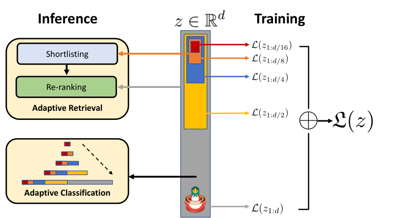
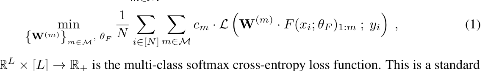
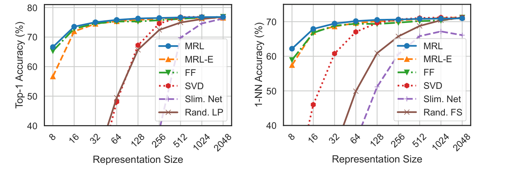
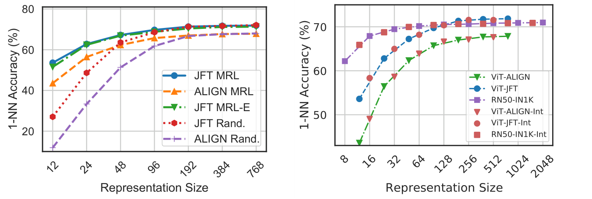
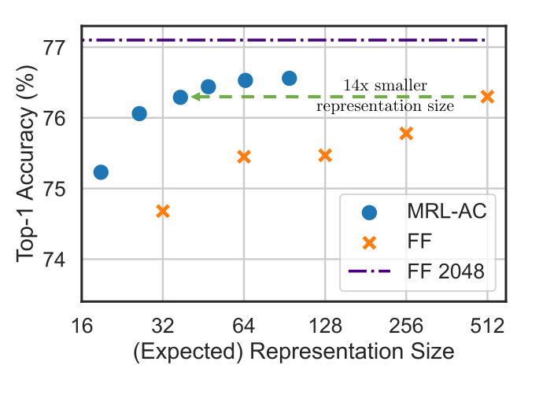
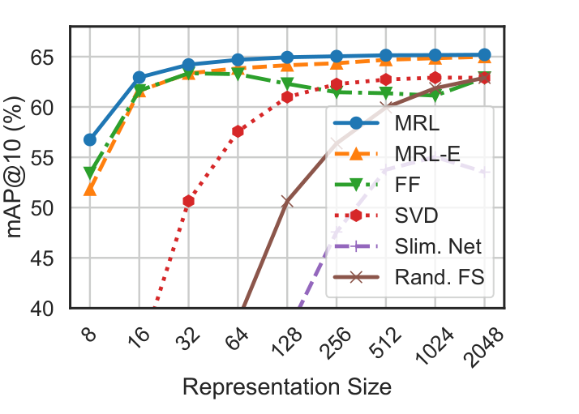
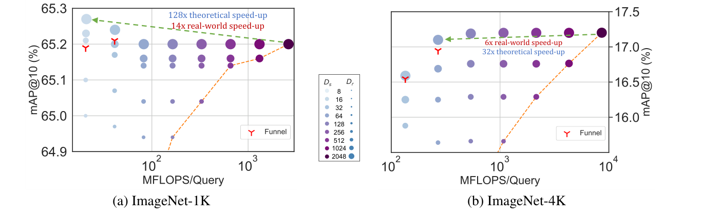
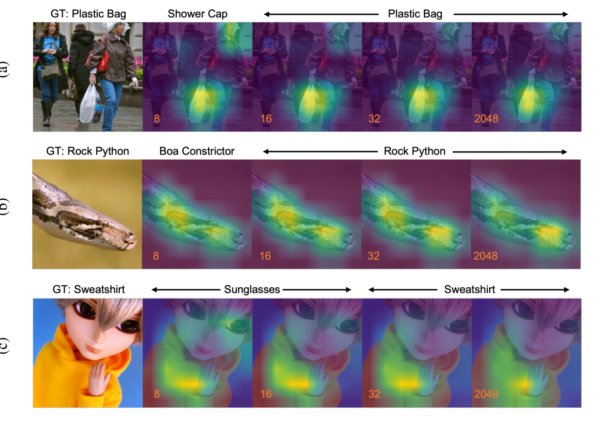
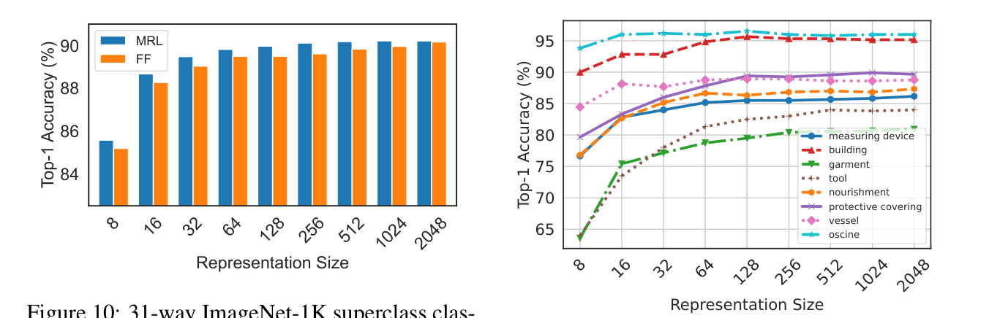

NeurIPS 2022 paper, arXiv v4 2024
Matryoshka Representation Learning
Train one embedding so its early prefixes are already useful, then spend only the dimensions a downstream task actually needs.
One vector, many granularities
Each outer layer contains every smaller layer: 8 dims, 32 dims, 128 dims, 512 dims, 2048 dims.
Source paper: Aditya Kusupati et al., Matryoshka Representation Learning.
The deployment problem
Standard embeddings are rigid.
A single fixed-capacity vector is used for every task, even when the task may only need a coarse semantic signal or may need the full fine-grained detail.
Fixed representation
Every downstream system pays for the full vector.
Adaptive representation
Use a prefix first; grow capacity only when useful.
Core idea
Make prefixes behave like real embeddings.

The first m coordinates, z1:m, are trained to stand alone.
Small prefixes capture broad semantics; longer prefixes add detail for harder decisions.
The model computes one full representation; downstream systems choose how much to read.
Training recipe
Optimize the same task at several nested sizes.
image, text, or pair
one loss per chosen prefix

What changes in practice?
The paper uses dimension sets like M = {8, 16, 32, 64, ..., 2048} for ResNet50 embeddings. MRL-E ties classifier weights across prefixes to reduce classifier memory.
Deploy: compute z once, then read z1:m as needed
Representation quality
Small prefixes stay competitive.

MRL tracks the independently trained fixed-feature baseline across representation sizes.
MRL outperforms the baselines across all shown dimensions, indicating stronger embedding geometry.
SVD, random features, and slimmable networks fall off sharply at small dimensions.
Scaling and interpolation
The nesting behavior transfers beyond one model.
The paper reports MRL on ResNet, ViT, ALIGN, and BERT-style setups.
Even dimensions not explicitly optimized show smooth interpolation between trained nesting points.
A system can choose many cut points at deployment time, not only the dimensions listed during training.

Application 1
Adaptive classification reads more dimensions only when confidence is low.

Cascade behavior
Start with the smallest prefix. If the classifier is confident, stop. If not, move to a longer prefix.
Up to 14x smaller expected representation size at the same accuracy level.
Application 2
Retrieval benefits because nearest-neighbor cost scales with dimension.

Encode once
Compute the full query representation.
Use z1:Ds
Find candidates cheaply with a small prefix.
Use z1:Dr
Spend more dimensions only on the candidate set.
Small dimensions are good enough for recall-oriented shortlisting; large dimensions refine the top ranks.
Adaptive retrieval result
Shortlist small, rerank large.
Ds = 16 and Dr = 2048 reaches full-vector accuracy while being far cheaper.
128x theoretical FLOP reduction and 14x real-world speedup with HNSW in the paper setup.
The harder dataset needs a larger shortlist prefix, but the adaptive setting still wins.

Funnel retrieval
A staged cascade removes some manual tuning.
Instead of choosing one shortlisting size and one reranking size, funnel retrieval repeatedly shrinks the candidate list while doubling representation capacity.
Use the smallest useful prefix for broad search.
Large vectors are used on tens of candidates, not millions.
MRL can sit under HNSW or other vector-search machinery.
Visual analysis
What do early dimensions actually see?

The 8-dimensional view may confuse related objects or broad superclasses.
Later prefixes add details that separate nearby classes or object parts.
Disagreement across prefixes can signal instance difficulty or routing opportunities.
Hierarchy and task difficulty
Low dimensions preserve coarse semantics first.
Even tight bottlenecks can capture broad ImageNet hierarchy.
Fine-grained groups like garments gain strongly as dimensions increase.
If a system can detect easy versus hard cases, it can choose dimensions dynamically.

How to read the paper for retrieval systems
MRL is an embedding interface, not a replacement for search infrastructure.
Encoder stays familiar
The training change wraps around supervised, contrastive, or masked language objectives.
Index can stay familiar
Prefix embeddings can be stored or indexed with standard vector-search tools.
Serving policy changes
The system gets a new control knob: how many dimensions to spend per query, stage, or confidence level.
Final takeaways
The paper's main contribution is controlled granularity.
Train once
Optimize several nested prefixes inside one representation vector.
Deploy flexibly
Use small prefixes for cheap coarse decisions and larger prefixes for hard cases.
Preserve quality
MRL stays close to or above fixed-feature baselines across many sizes.
Open questions
Better loss weighting, routing policies, and learned search structures are natural next steps.
Figures are cropped from matryoshka.pdf in this workspace.